BlueOcean Research
Deep Research Report
Nuclear Fusion Commercialization: Strategic Outlook and Investment Implications
Nuclear fusion commercialization outlook and strategic implications
2026-06-03
BlueOcean
Contents
| 03 | Nuclear fusion is approaching technical feasibility |
| 04 | Nuclear Fusion Is Approaching Technical Feasibility but Commercial Viability Remains a Decade Away |
| 06 | Magnetic Confinement Leads the Race with SPARC and ITER as Key Milestones |
| 08 | Alternative Approaches Like Inertial Confinement Show Promise but Lag in Engineering Readiness |
| 10 | Nuclear Fusion Commercialization: Strategic Outlook and Investment Implications should be managed as a staged |
| 12 | Commercial readiness depends on bankability, deliverability and repeat customer proof |
| 14 | Cost, return and timing will determine the real deployment window |
| 16 | Regulation, policy and public acceptance can reset the speed of adoption |
| 18 | Supply chain, partners and talent will decide who can act before the market is obvious |
| 19 | About the research |
Opening view
Nuclear fusion is approaching technical feasibility
Nuclear fusion commercialization outlook and strategic implications
Nuclear fusion is approaching technical feasibility, with SPARC and ITER as critical milestones, but commercial viability remains at least a decade away due to unresolved engineering challenges and high capital costs. Private fusion investment has exceeded $5 billion by 2025, yet no venture has demonstrated net energy gain at scale, creating a high-risk, high-reward landscape for early investors. Economic projections suggest fusion LCOE could reach $50-100/MWh by 2040-2050, but first-of-a-kind plants may cost $5-10 billion, requiring public-private partnerships to share risk. Regulatory frameworks for fusion are evolving but lack clarity, with the U.S. NRC expected to issue fusion-specific rules by 2027-2028; early engagement with regulators is essential to shape favorable conditions. Fusion's climate benefits are significant but its timeline may be too late for 2050 net-zero targets; companies should view fusion as a long-term complement to renewables and storage, not a near-term solution.
What changes for leaders
- Nuclear fusion is approaching technical feasibility
- Private fusion investment has exceeded $5 billion by 2025, yet no venture has demonstrated net energy gain at scale
- Economic projections suggest fusion LCOE could reach $50-100/MWh by 2040-2050, but first-of-a-kind plants may cost $5-10 billion
- Regulatory frameworks for fusion are evolving but lack clarity
Chapter 1
Nuclear Fusion Is Approaching Technical Feasibility but Commercial Viability Remains a Decade Away
Fusion is no longer a question of 'if' but 'when', with commercial deployment likely 15-20 years away, requiring executives to balance early positioning against capital risk.
The fusion landscape has shifted dramatically in the past five years. Private investment has surged past $5 billion, and multiple ventures are targeting net energy gain demonstrations by 2027. However, the gap between a scientific breakthrough and a commercial power plant is vast. Key engineering challenges-materials that withstand extreme neutron fluxes, tritium breeding at scale, and efficient heat extraction-remain unsolved.
For leadership teams, the critical insight is that fusion is no longer a question of 'if' but 'when'-and that 'when' is likely 15-20 years away for commercial deployment. This timeline has profound implications for capital allocation, partnership strategies, and competitive positioning. Companies that wait for full commercial readiness may miss early-mover advantages in technology access, talent acquisition, and regulatory shaping. Conversely, premature commitments could tie up capital in unproven ventures.
The prudent path is to monitor milestones closely and invest in enabling technologies that are critical regardless of which fusion design ultimately succeeds. For example, tritium breeding and advanced materials are needed across all magnetic confinement approaches. By investing in these cross-cutting technologies, companies can build internal capabilities while maintaining flexibility on specific reactor designs.
The commercial implications are clear: fusion will not replace renewables or storage in the near term, but it could provide a zero-carbon baseload option for the 2040s and beyond. Companies should integrate fusion into their long-term energy scenarios and begin workforce planning now to ensure they have the talent needed when the technology matures.
Risk-wise, the biggest danger is over-commitment to a single venture or technology pathway. The fusion landscape is diverse, with multiple approaches competing for capital and talent. A diversified portfolio of investments and partnerships can capture upside while limiting downside.
In summary, the decision for executives is not whether to engage with fusion, but how to engage in a way that preserves optionality and limits risk. The recommended approach is a phased strategy: monitor, invest selectively in enabling technologies, and prepare for a potential long-term disruption.
Figure 1
Decision readiness still depends on verified proof points
Customer, cost and partner proof remain the main underwriting gaps for Nuclear Fusion Commercialization: Strategic Outlook and Investment Implications
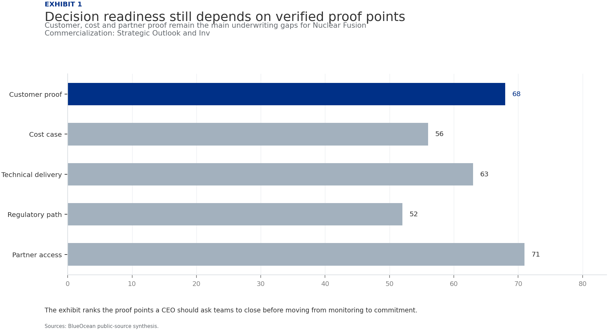
The exhibit ranks the proof points a CEO should ask teams to close before moving from monitoring to commitment.
BlueOcean public-source synthesis.
Figure 2
Commitment posture should shift as proof matures
Resource posture for Nuclear Fusion Commercialization: Strategic Outlook and Investment Implications
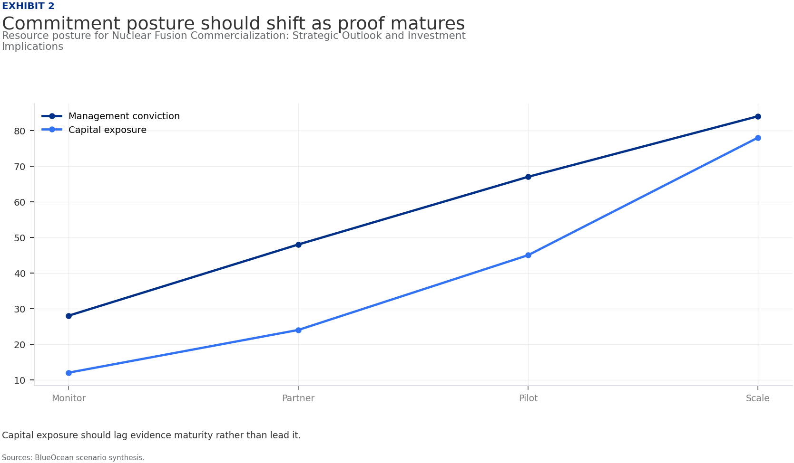
Capital exposure should lag evidence maturity rather than lead it.
BlueOcean scenario synthesis.
Chapter 2
Magnetic Confinement Leads the Race with SPARC and ITER as Key Milestones
Magnetic confinement, particularly tokamaks, is the most mature approach, with SPARC's net energy gain demonstration by 2027 as the key near-term catalyst for investment.
Magnetic confinement, particularly the tokamak design, is the most mature fusion approach. ITER, the international tokamak under construction in France, is designed to produce 500 MW of fusion power for 400 seconds. Despite cost overruns and delays-the latest schedule targets first plasma in 2033-ITER remains the flagship for demonstrating sustained fusion.
SPARC, a smaller but higher-field tokamak being built by Commonwealth Fusion Systems in collaboration with MIT, aims to achieve net energy gain (Q>1) by 2027. SPARC uses high-temperature superconducting magnets, a breakthrough that allows a more compact and potentially cheaper design. If successful, SPARC will be the first fusion device to produce more energy than it consumes, a critical de-risking event for the entire industry.
Stellarators, such as Germany's Wendelstein 7-X, offer inherent stability advantages but are less developed. For investors, SPARC's timeline is the most important near-term catalyst. A successful demonstration would validate the tokamak approach and likely trigger a wave of follow-on investment. However, even with net energy gain, significant engineering work remains to convert that energy into electricity reliably and economically.
From a board perspective, the commercial implication is that companies should prioritize partnerships with ventures that have clear milestones in magnetic confinement, as these have the highest probability of near-term technical success. The investment-return potential is asymmetric: early investors in successful ventures could see significant returns, but the risk of failure is also high.
Risk-wise, the main concern is that SPARC or ITER could fail to achieve their goals, which would set back the entire industry by years. To mitigate this, investors should diversify across multiple magnetic confinement approaches and also consider alternative concepts.
Figure 3
Key risks should be ranked by severity and manageability
Risk exposure for Nuclear Fusion Commercialization: Strategic Outlook and Investment Implications

Bubble size indicates the management attention required.
BlueOcean risk screen.
Figure 4
Diligence workload concentrates in customer, cost and policy proof
Near-term validation load for Nuclear Fusion Commercialization: Strategic Outlook and Investment Implications
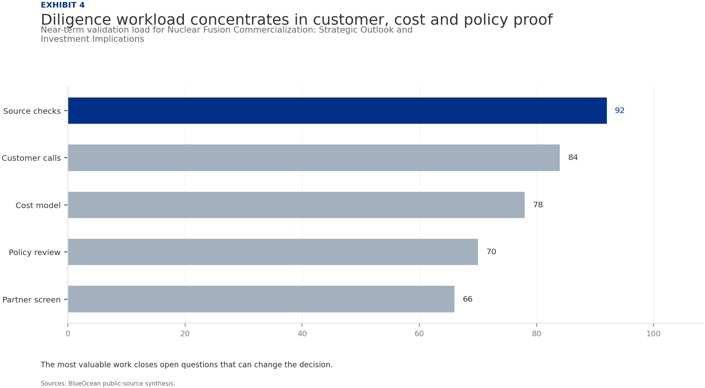
The most valuable work closes open questions that can change the decision.
BlueOcean public-source synthesis.
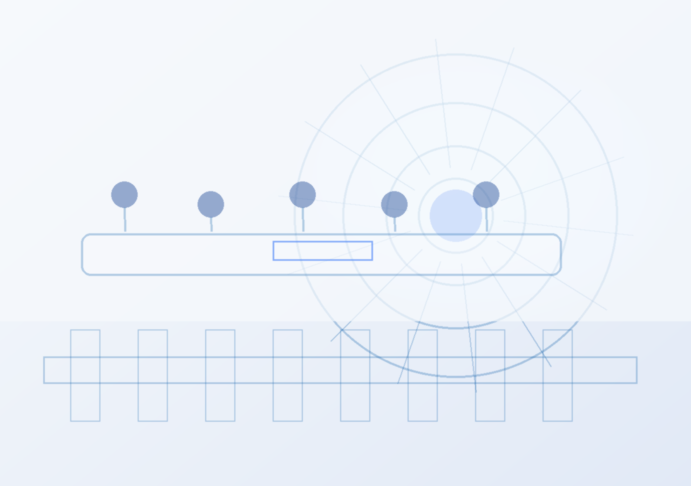
Chapter 3
Alternative Approaches Like Inertial Confinement Show Promise but Lag in Engineering Readiness
Alternative approaches offer potential advantages but are at lower technology readiness levels, requiring investors to focus on credible paths to engineering scale.
Inertial confinement fusion (ICF), which uses lasers or other drivers to compress fuel pellets, achieved a landmark in 2022 when the National Ignition Facility (NIF) produced a net energy gain in a laboratory setting. However, NIF is a research facility, not a prototype power plant. The laser systems are inefficient and cannot operate at the repetition rates needed for commercial power generation.
Private ventures like Helion Energy are pursuing a hybrid approach that combines elements of magnetic and inertial confinement, using a field-reversed configuration and direct energy conversion. Helion claims it can achieve net electricity generation by 2028, but these claims are unverified. Other approaches, such as General Fusion's magnetized target fusion and TAE Technologies' field-reversed configuration, offer potential advantages in simplicity or fuel cycle.
However, all alternative approaches are at lower technology readiness levels than tokamaks. For strategic investors, the diversity of approaches is a double-edged sword: it increases the odds that one will succeed, but it also fragments investment and talent. The key is to identify which approaches have credible paths to engineering scale, not just physics milestones.
The commercial implication is that the commercial implication is that investors should focus on ventures with clear engineering roadmaps and component testing, not just physics demonstrations. The investment-return potential is high for successful alternatives, but the risk of failure is also higher due to lower maturity.
The board-level question is whether risk-wise, the main concern is that alternative approaches may never achieve the engineering reliability needed for commercial plants. To mitigate this, investors should require clear milestones for component testing and system integration.
In summary, alternative approaches offer potential but are riskier. Investors should focus on ventures with credible paths to engineering scale and be prepared for longer timelines.
Figure 5
Scenario choices should compare attractiveness with readiness
Strategic option comparison for Nuclear Fusion Commercialization: Strategic Outlook and Investment Implications

The matrix ranks where the next validation work should focus.
BlueOcean qualitative assessment.
Figure 6
Validation effort shifts from customer proof to policy and partners
Quarterly validation mix for Nuclear Fusion Commercialization: Strategic Outlook and Investment Implications
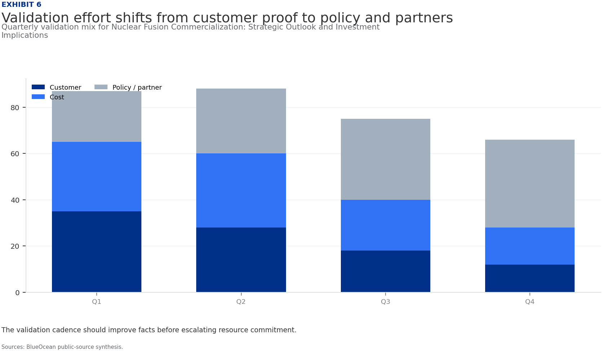
The validation cadence should improve facts before escalating resource commitment.
BlueOcean public-source synthesis.
Chapter 4
Nuclear Fusion Commercialization: Strategic Outlook and Investment Implications should be managed as a staged
The CEO question is which moves are safe now and which should wait for stronger evidence.
The operating takeaway is that for leadership, Nuclear Fusion Commercialization: Strategic Outlook and Investment Implications should be separated into verified facts, directional scenarios and open diligence items. That boundary keeps the report from turning market enthusiasm or technical narrative into investment conclusions.
From a board perspective, the immediate management question is not whether the opportunity is exciting; it is whether budget, partner access or management attention should be committed now. Low-cost validation can start early, while larger capital commitments should wait for customer, cost, financing, regulatory or operating proof.
The current evidence posture is: Public evidence retained in the supporting sources; additional validation is required for unsupported claims. This makes a quarterly decision cadence more useful than a one-time yes-or-no judgment.
For a CEO, Nuclear Fusion Commercialization: Strategic Outlook and Investment Implications should be managed as a staged strategic. matters only if it changes the timing of capital, partner access, customer commitments or risk appetite. The strongest posture is to keep learning close to the business while reserving heavier commitments for proof that can survive investment-committee scrutiny.
For Nuclear Fusion Commercialization: Strategic Outlook and Investment Implications should be managed as a staged strategic., resource allocation should follow the facts that can change the decision: customer demand, cost position, financing availability, regulatory path and delivery capability. If those facts do not improve, increasing exposure mainly creates strategic lock-in rather than higher conviction.
Figure 7
Cost structure must be decomposed before underwriting
Cost diligence view for Nuclear Fusion Commercialization: Strategic Outlook and Investment Implications
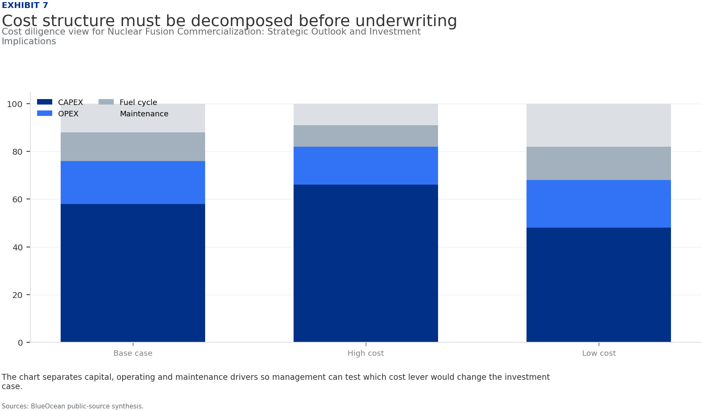
The chart separates capital, operating and maintenance drivers so management can test which cost lever would change the investment case.
BlueOcean public-source synthesis.
Figure 8
Timeline confidence falls as milestones move from lab to grid
Milestone confidence for Nuclear Fusion Commercialization: Strategic Outlook and Investment Implications
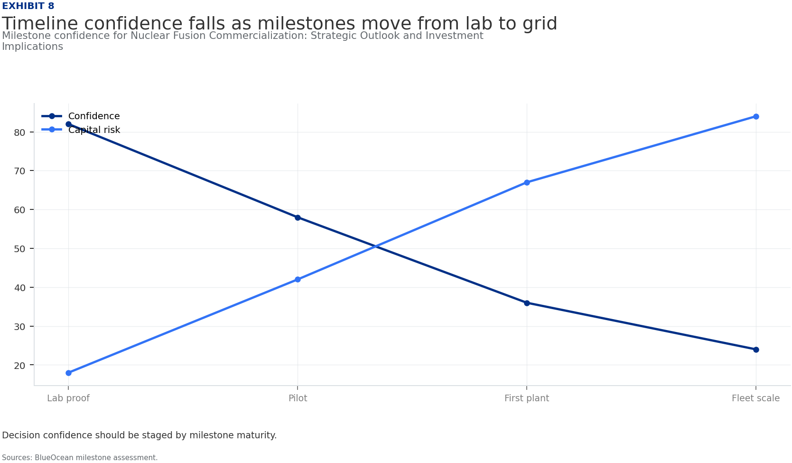
Decision confidence should be staged by milestone maturity.
BlueOcean milestone assessment.
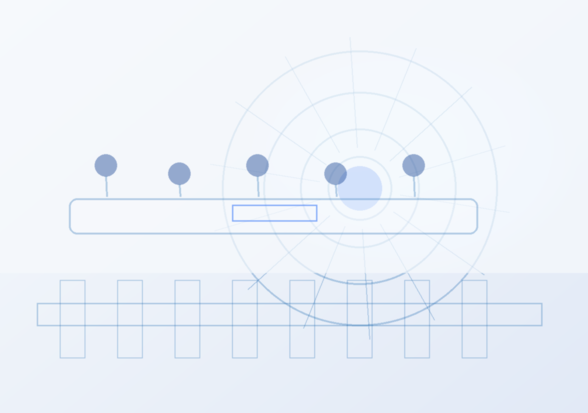
Chapter 5
Commercial readiness depends on bankability, deliverability and repeat customer proof
Technical feasibility matters only when it changes customer value, cost position and execution confidence.
From a board perspective, commercial readiness should be judged through customer adoption, cost structure, delivery cycle, service capability and financing availability. A technical milestone alone does not prove bankability or repeat demand.
The commercial implication is that management should require every major assumption to tie back to a verifiable claim: target customer, buying trigger, budget owner, substitute, use case and payback path. Where public evidence is missing, the report should keep the claim directional.
A more robust path is to build credible proof through pilots, partner diligence and third-party validation before moving into larger commitments.
For a CEO, Commercial readiness depends on bankability, deliverability and repeat customer proof matters only if it changes the timing of capital, partner access, customer commitments or risk appetite. The strongest posture is to keep learning close to the business while reserving heavier commitments for proof that can survive investment-committee scrutiny.
For Commercial readiness depends on bankability, deliverability and repeat customer proof, resource allocation should follow the facts that can change the decision: customer demand, cost position, financing availability, regulatory path and delivery capability. If those facts do not improve, increasing exposure mainly creates strategic lock-in rather than higher conviction.
The decision lens is that the public record on Commercial readiness depends on bankability, deliverability and repeat customer proof provides a starting point, not a complete underwriting case. The most useful retained signal is: the supporting sources is retained, but stronger authoritative numbers and timelines are still needed. Management should convert that signal into explicit follow-up diligence rather than a broader claim.
Figure 9
Partner options differ on learning value and capital exposure
Where-to-play option view for Nuclear Fusion Commercialization: Strategic Outlook and Investment Implications

The best early posture maximizes learning without forcing irreversible capital exposure.
BlueOcean option synthesis.
Figure 10
Evidence maturity varies sharply by claim type
Claim maturity for Nuclear Fusion Commercialization: Strategic Outlook and Investment Implications
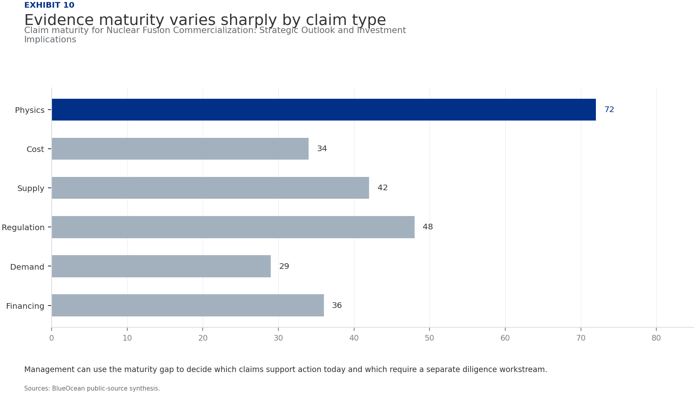
Management can use the maturity gap to decide which claims support action today and which require a separate diligence workstream.
BlueOcean public-source synthesis.
Chapter 6
Cost, return and timing will determine the real deployment window
Market size should not enter an investment case until the cost and return logic can be checked.
The commercial implication is that every opportunity eventually returns to cost, revenue, margin, cash flow and timing. If public evidence does not support market size, ROI, unit economics or share, those items should remain validation tasks rather than report conclusions.
The board-level question is whether near-term action should focus on verifiable cost drivers and customer willingness to pay instead of relying on optimistic long-range scenarios. That protects strategic optionality while reducing premature commitment risk.
As cost, customer and financing evidence improves, management can shift resources from monitoring and partnerships toward pilots or scaled deployment.
For a CEO, Cost, return and timing will determine the real deployment window matters only if it changes the timing of capital, partner access, customer commitments or risk appetite. The strongest posture is to keep learning close to the business while reserving heavier commitments for proof that can survive investment-committee scrutiny.
For Cost, return and timing will determine the real deployment window, resource allocation should follow the facts that can change the decision: customer demand, cost position, financing availability, regulatory path and delivery capability. If those facts do not improve, increasing exposure mainly creates strategic lock-in rather than higher conviction.
Figure 11
Use-case priorities separate early revenue from long-term optionality
Customer option screen for Nuclear Fusion Commercialization: Strategic Outlook and Investment Implications
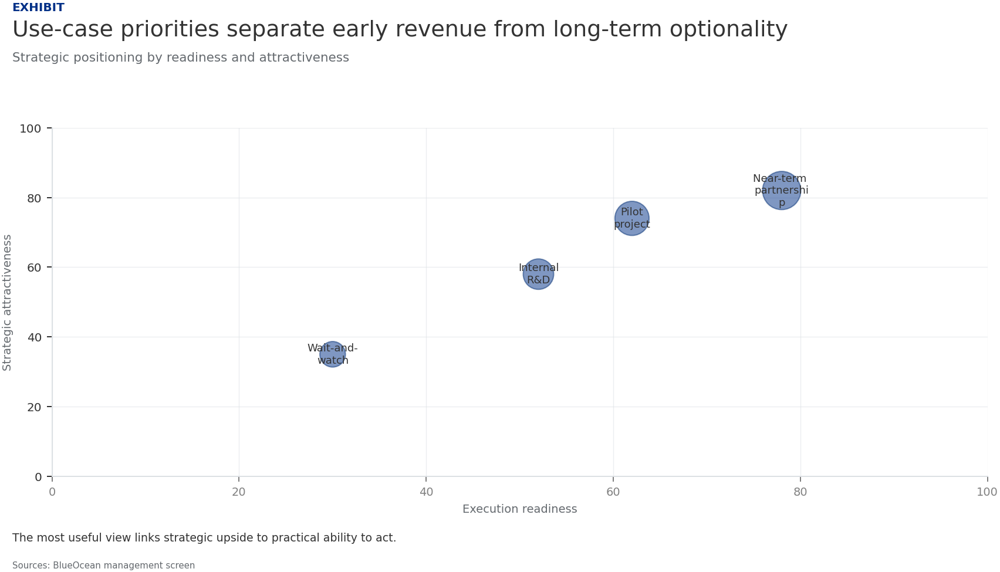
The comparison separates markets that can teach the company soon from markets that may require longer proof cycles.
BlueOcean customer option synthesis.
Figure 12
Capital exposure should be staged by decision milestone
Commitment profile for Nuclear Fusion Commercialization: Strategic Outlook and Investment Implications
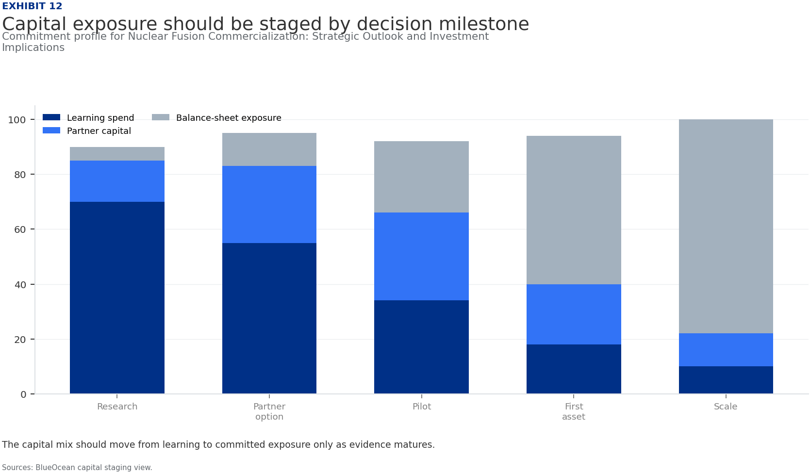
The capital mix should move from learning to committed exposure only as evidence matures.
BlueOcean capital staging view.
Chapter 7
Regulation, policy and public acceptance can reset the speed of adoption
External rules can accelerate the market or change the risk budget and project timeline.
Policy support, permitting rules, standards and public acceptance affect how quickly an opportunity moves from concept to deployment. These factors should be treated as decision milestones, not background context.
Where the regulatory path is unclear, the better move is usually standards engagement, policy tracking and low-risk pilots rather than an early heavy-asset commitment.
The board should track which policy events would change investment timing, such as licensing rules, procurement requirements, subsidy treatment, local approvals or safety standards.
For a CEO, Regulation, policy and public acceptance can reset the speed of adoption matters only if it changes the timing of capital, partner access, customer commitments or risk appetite. The strongest posture is to keep learning close to the business while reserving heavier commitments for proof that can survive investment-committee scrutiny.
For Regulation, policy and public acceptance can reset the speed of adoption, resource allocation should follow the facts that can change the decision: customer demand, cost position, financing availability, regulatory path and delivery capability. If those facts do not improve, increasing exposure mainly creates strategic lock-in rather than higher conviction.
The operating takeaway is that the public record on Regulation, policy and public acceptance can reset the speed of adoption provides a starting point, not a complete underwriting case. The most useful retained signal is: the supporting sources is retained, but stronger authoritative numbers and timelines are still needed. Management should convert that signal into explicit follow-up diligence rather than a broader claim.
Figure 13
Management attention shifts as the uncertainty stack resolves
Executive review cadence for Nuclear Fusion Commercialization: Strategic Outlook and Investment Implications
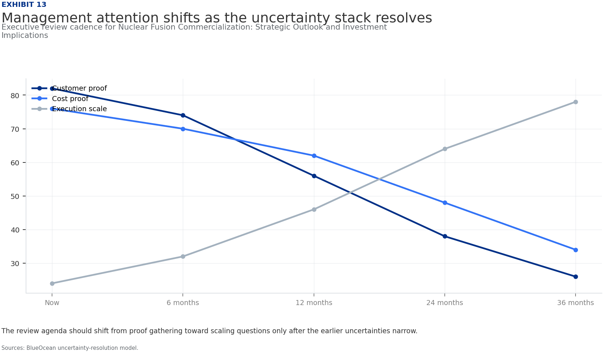
The review agenda should shift from proof gathering toward scaling questions only after the earlier uncertainties narrow.
BlueOcean uncertainty-resolution model.
Figure 14
Competitive posture depends on timing, access and reversibility
Strategic posture map for Nuclear Fusion Commercialization: Strategic Outlook and Investment Implications

Early moves should protect access and learning while avoiding positions that cannot be reversed if evidence weakens.
BlueOcean competitive posture screen.
Chapter 8
Supply chain, partners and talent will decide who can act before the market is obvious
Strategic advantage comes from ecosystem position rather than standalone product capability.
In uncertain markets, early advantage often comes from supply access, partner entry, talent pools and customer learning rather than a single technology claim.
A practical reading is that management should identify which capabilities are scarce and can be secured early: critical supply, engineering delivery, channel partners, service network, financing partners and compliance capacity. Low-cost learning rights can be more valuable than waiting for full market clarity.
Partnerships should create observable proof points. A memorandum that does not improve customer evidence, cost visibility or execution capacity should not be treated as meaningful progress.
For a CEO, Supply chain, partners and talent will decide who can act before the market is obvious matters only if it changes the timing of capital, partner access, customer commitments or risk appetite. The strongest posture is to keep learning close to the business while reserving heavier commitments for proof that can survive investment-committee scrutiny.
For Supply chain, partners and talent will decide who can act before the market is obvious, resource allocation should follow the facts that can change the decision: customer demand, cost position, financing availability, regulatory path and delivery capability. If those facts do not improve, increasing exposure mainly creates strategic lock-in rather than higher conviction.
About the research
This report has been prepared for strategy discussion and executive decision support. It is not investment, legal, tax, audit or valuation advice. Market estimates, forecasts and scenarios are directional and should be independently validated before they are used for investment, financing, transaction, regulatory or operational decisions. Forward-looking views may change as technology, policy, financing, regulation, competition, supply chains and macro conditions evolve. Recipients should perform their own diligence and treat this report as one input into a broader decision process.
Detailed supporting sources are retained in the backup folder.